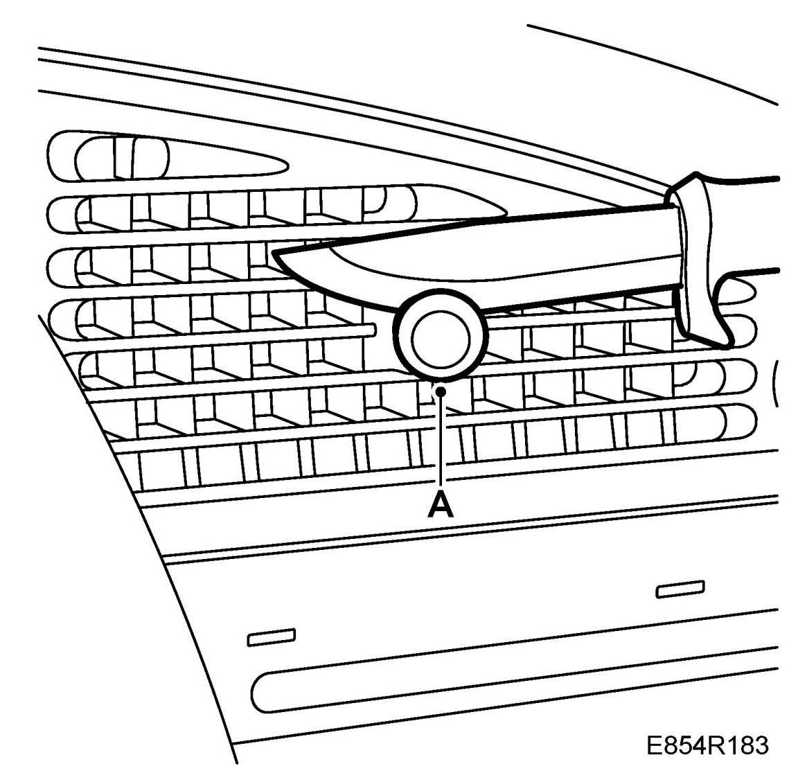
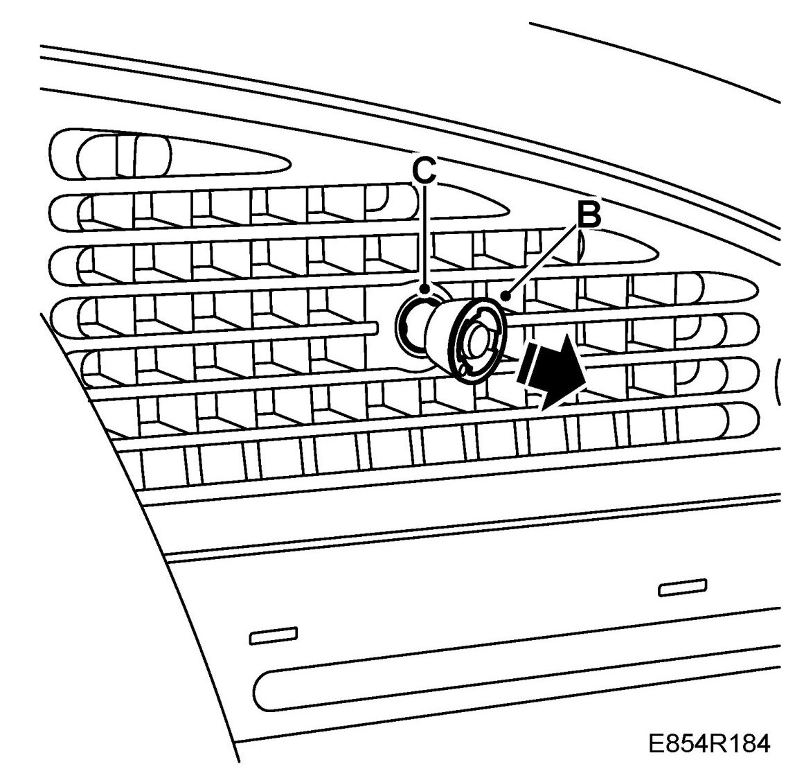
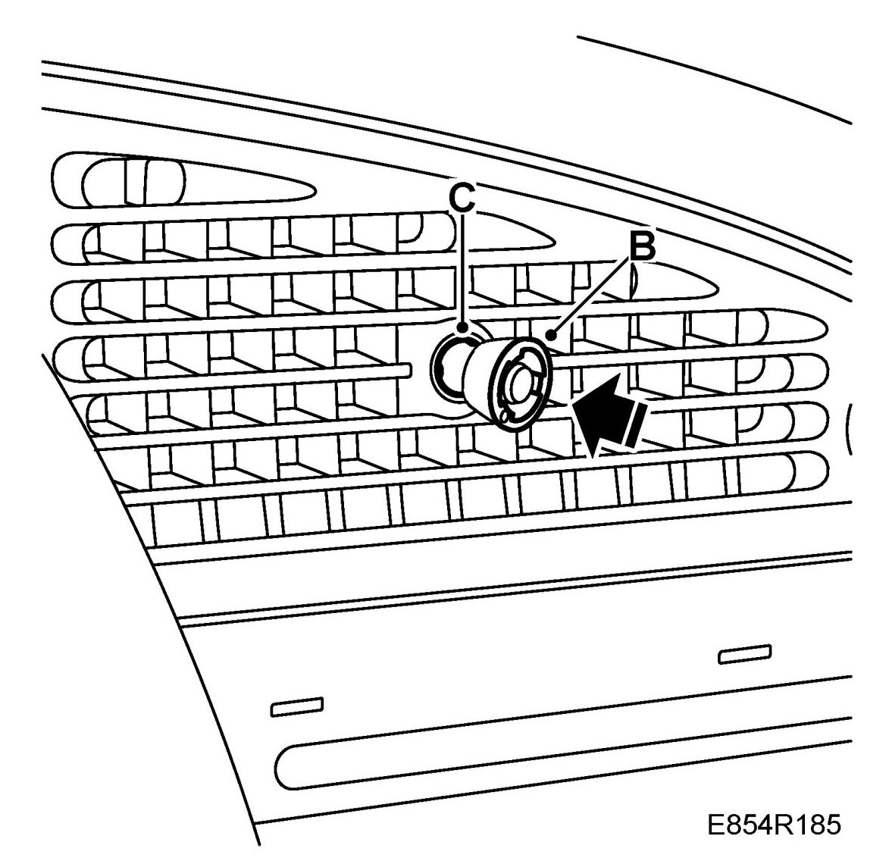
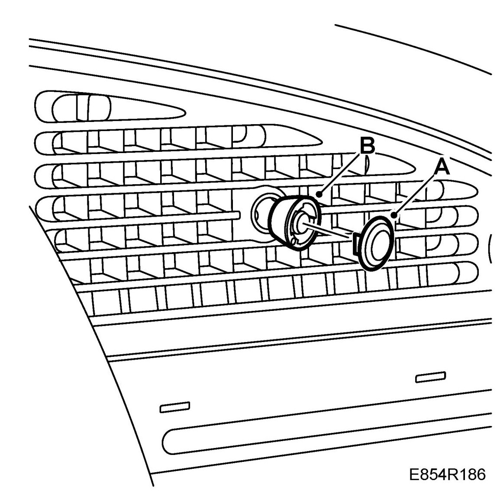

Control Knob, Air Vent (With Chrome Ring)
Control Knob, Air Vent (With Chrome Ring)
WARNING: There is a risk of personal injury when using a knife. Use suitable safety equipment such as protective safety glasses and protective gloves.
To remove
1. Carefully separate the plastic top (A) from the rubber knob using a knife.

2. Remove the rubber knob (B) from the control knob (C).

To fit
1. Press the rubber knob (B) on the control knob (C).

2. Press the plastic top (A) onto the rubber knob (B).
